下から覗かれるから [梅吉]
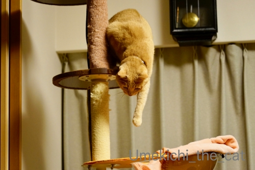
梅吉さんがキャットタワーから急いで降りてきたのは
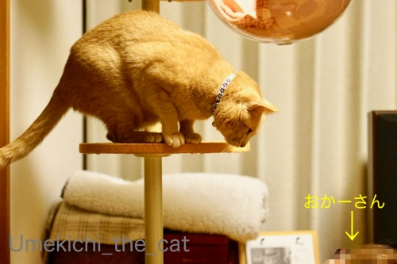
おかーさんがタワーの下から覗き込んでいたから。
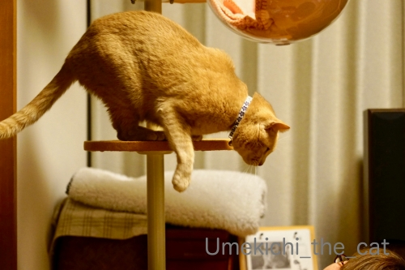
![[猫]](https://blog.ss-blog.jp/_images_e/101.gif) したからのぞいたら わしのぱんちおみまいするでー
したからのぞいたら わしのぱんちおみまいするでー
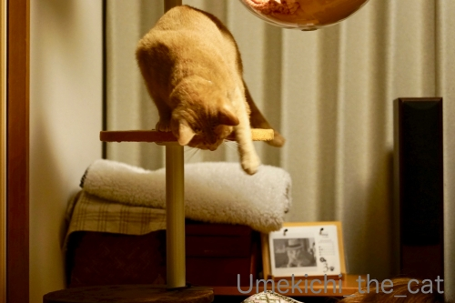
空を切るねこぱんちw全然届いていないし( ´艸｀)
ねこは隙間や物陰から覗くと喜びますよね。おしりぷりぷりしながら飛びついて来たり。
梅吉は下から覗くように見上げられるのが一番すき。
色々なツボがあるものだと梅吉に教えてもらう日々ですw
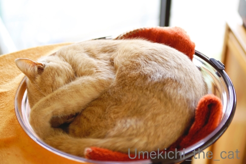
クリアボールにまあるく綺麗に収まってお昼寝。
惜しい！お耳が切れてますw（おっとへw）
おっと、写真対応してくれましたm(_ _)m
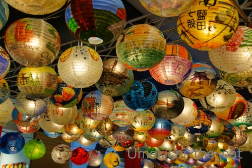
なんばで見かけた台湾のランタン。台南市の子供達がつくったのかな？
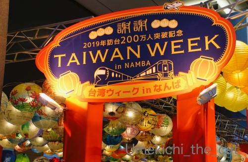
台湾の旅行客の方は大歓迎なんですけど、ね。。。
「奈良で武漢滞在歴のない日本人が新型コロナウィルスに感染」のニュースが報じられたのち
近所のドラッグストアのマスクが完全に売り切れました。
乗客から運転手さんに・・・濃厚接触者じゃなくても「人から人」にうつるんですよね。
飛沫感染なのか空気感染なのか・・・・・
マスク、うがい、手洗い。
あとはお家に入る前に衣服や持ち物をよく払うのも有効かな？
手で払うより衛生的では、と専用のブラシを玄関（の外）に置きました。
今の所自衛するしか手段はなさそうです。
 ↑ガブッと一押し↑
↑ガブッと一押し↑
七福神めぐり最終回にたどり着く前にまた敷津松之宮神社に行ってきたので
そのときの写真も載せておこう＾＾
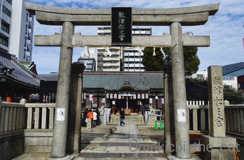
神功皇后がこの地に三本の松を植えて・・・と言われているのですが
それらしい松の名残がどこにもないのが残念です。
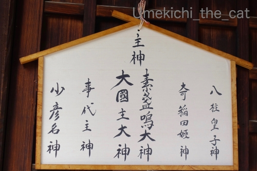
祀られている神様たちがすごいw
そんなに鎮めたいモノはなんだったのかしらと妄想してしまう。
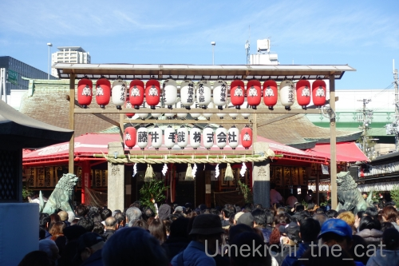
そして、やってきました残り福の日の今宮戎神社。
七福神ではもちろん恵比寿様です。
えべっさんの時には３日間で100万人もの人が訪れると以前の記事で書いたのですが・・・
神社の敷地内もそう広くもなくなにより路地の奥の方に神社があるので
あたりの狭い通りは人で溢れかえります。この日も写真に写るのは人の頭ばかりー！
この写真でそれが伝わるかしら。
路地には露店が立ち並びお賑やかな雰囲気です。
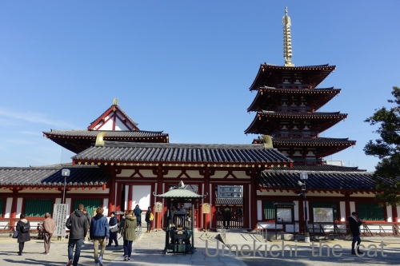
今宮戎神社から歩くこと15分くらい？
最終目的地の四天王寺です。
ここには布袋様のお堂があります。
って写真がないw
そうなのです、歩き疲れているのと達成感でお参りをしたら
「さ、帰るよ」モードになっているのでいつもここは手短にお参りしてしまうのです。
ブログ記事もちょっと尻つぼみになってしまった。
来年は今宮戎神社、四天王寺のことをいろいろ調べようと自分の宿題にしたのでした。
どちらも奥がふかーい神社なので簡単ではないのですが・・・
梅吉さんがキャットタワーから急いで降りてきたのは
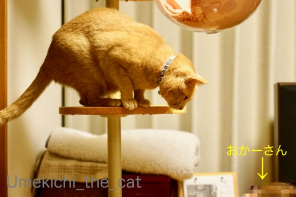
おかーさんがタワーの下から覗き込んでいたから。
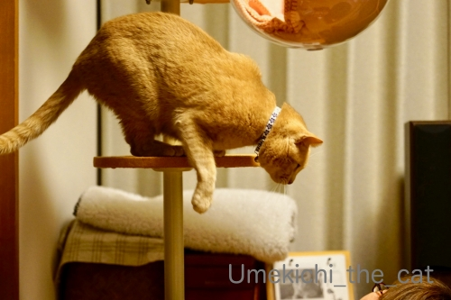
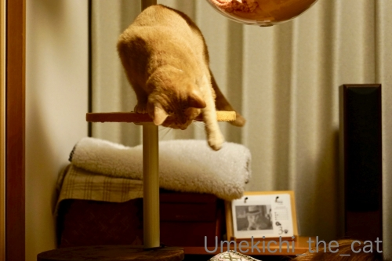
空を切るねこぱんちw全然届いていないし( ´艸｀)
ねこは隙間や物陰から覗くと喜びますよね。おしりぷりぷりしながら飛びついて来たり。
梅吉は下から覗くように見上げられるのが一番すき。
色々なツボがあるものだと梅吉に教えてもらう日々ですw
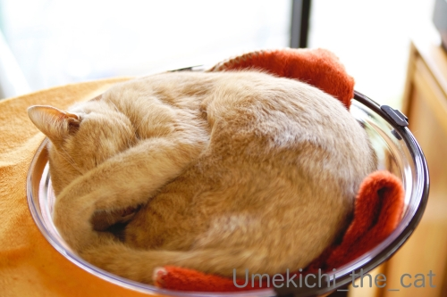
クリアボールにまあるく綺麗に収まってお昼寝。
おっと、写真対応してくれましたm(_ _)m
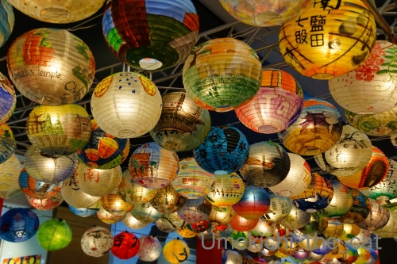
なんばで見かけた台湾のランタン。台南市の子供達がつくったのかな？
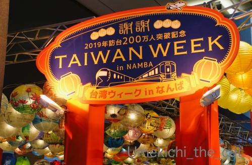
台湾の旅行客の方は大歓迎なんですけど、ね。。。
「奈良で武漢滞在歴のない日本人が新型コロナウィルスに感染」のニュースが報じられたのち
近所のドラッグストアのマスクが完全に売り切れました。
乗客から運転手さんに・・・濃厚接触者じゃなくても「人から人」にうつるんですよね。
飛沫感染なのか空気感染なのか・・・・・
マスク、うがい、手洗い。
あとはお家に入る前に衣服や持ち物をよく払うのも有効かな？
手で払うより衛生的では、と専用のブラシを玄関（の外）に置きました。
今の所自衛するしか手段はなさそうです。
七福神めぐり最終回にたどり着く前にまた敷津松之宮神社に行ってきたので
そのときの写真も載せておこう＾＾
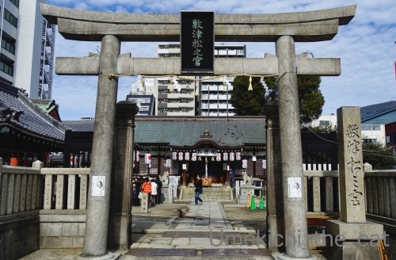
神功皇后がこの地に三本の松を植えて・・・と言われているのですが
それらしい松の名残がどこにもないのが残念です。
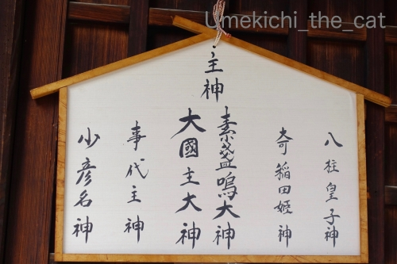
祀られている神様たちがすごいw
そんなに鎮めたいモノはなんだったのかしらと妄想してしまう。
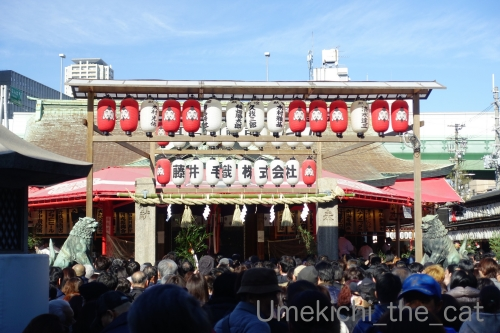
そして、やってきました残り福の日の今宮戎神社。
七福神ではもちろん恵比寿様です。
えべっさんの時には３日間で100万人もの人が訪れると以前の記事で書いたのですが・・・
神社の敷地内もそう広くもなくなにより路地の奥の方に神社があるので
あたりの狭い通りは人で溢れかえります。この日も写真に写るのは人の頭ばかりー！
この写真でそれが伝わるかしら。
路地には露店が立ち並びお賑やかな雰囲気です。
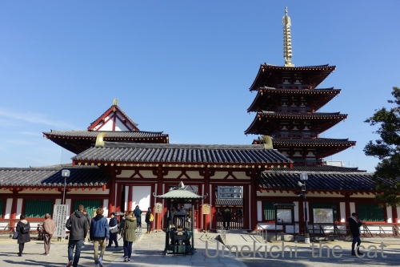
今宮戎神社から歩くこと15分くらい？
最終目的地の四天王寺です。
ここには布袋様のお堂があります。
って写真がないw
そうなのです、歩き疲れているのと達成感でお参りをしたら
「さ、帰るよ」モードになっているのでいつもここは手短にお参りしてしまうのです。
ブログ記事もちょっと尻つぼみになってしまった。
来年は今宮戎神社、四天王寺のことをいろいろ調べようと自分の宿題にしたのでした。
どちらも奥がふかーい神社なので簡単ではないのですが・・・
2020-01-30 00:00
nice!(92)
コメント(26)

カフェオレ色の梅吉

梅吉 2023年8月10日 永眠


梅吉と出会った譲渡会

犬猫の理由なき殺処分ゼロ
妄想広告
UMEKICHI 光

爆発的に早い！
時々攻撃的！
Thanks to Mr.Boss365
爆発的に早い！
時々攻撃的！
Thanks to Mr.Boss365

梅吉さん空を切る猫パンチがかわよいですね。
肺炎はもうどこに感染者がいるか分からないので人の集まる所に行きたくありません。
by zombiekong (2020-01-30 00:50)
うちのコも物陰からのチラ見は好きみたいですが
今のところ他は不明です
らいむの好みはこれからいろいろ知っていくことになるので
日々が楽しみです（＾＾）
by 藤並 香衣 (2020-01-30 02:31)
我が家の子たちのツボは全く分かりません。
それぞれ観察したら何かあるのでしょうが・・・＾＾；
by ぽちの輔 (2020-01-30 06:52)
下からの攻撃、じゃなかった覗かれるのがツボなのですね～。
おもしろーい。
うん、確かに物陰からチラ、というか、去っていくものを追いかける習性があるから、隠れると飛びつく、手が出るって感じですよね。
下から覗くのは、陰からでなくても反応するのかしら。
空中パンチ、かわいいです～。
クリアボールでまん丸お昼寝。ずいぶん慣れたなーとも思いますが、やっぱり敷物はないとダメなのかな。
by ChatBleu (2020-01-30 06:57)
ウププ、梅吉さんったらわざと届かないパンチを繰り出して( ^ω^ )
もう撮影に協力してくれるわ、お母さんにけがをさせないように気を使ってくれるわ・・・で、さすがです*\(^o^)/*
うちのニャンズだと、私には何の遠慮もせずにパンチを食らわすか
きっぱり無視して爆睡だなぁw
by ニッキー (2020-01-30 07:21)
猫パンチ炸裂～ じゃなくてハズレ～か（ﾟ□ﾟ）
うがい、手洗い、ヤクルト（ﾟ□ﾟ）
by 英ちゃん (2020-01-30 08:22)
ちょっと前に「猫鍋」という写真集が話題になりましたが、猫は丸い入れ物にスポッと入りたがりますよね(^^)
届かない猫パンチ、大受けです！
by kou (2020-01-30 08:32)
猫パンチ！！弱々しい？
下から覗く！！それは遊ぶ合図ですね(#^.^#)
by きぃ (2020-01-30 08:32)
わかります！下から覗き込むと興奮しますよ、あおも(笑)
そこでねこぱんちをするのが梅吉くん。
甘えモードに入っちゃうのがあおｗｗ
敷津松之宮神社！！ご祭神さま、ほんとにすごい！ｗｗ
スサノオファミリー勢揃い！(笑)
数年前からぼんやりと、すさのお vs 大国主命っていうのも面白いなーなどと妄想中。もうちょっと考えがまとまったら、何かに書きます。（当分先だけどｗ）
by リュカ (2020-01-30 08:52)
えべっさんも四天王寺も長いこと行ってないなぁ。。。
と、遠い目ですσ(^_^;)
by よーちゃん (2020-01-30 08:56)
梅吉さんも「だるまさんが転んだ」するのかな？
にゃんこは何やっても可愛いねえ〜
下から見る猫の口元が大好きっすー
by じゅらまろ (2020-01-30 10:10)
梅ちゃんの場合、下から覗かれるがスイッチなのですね(笑)
空を切るパンチもかわいいですっ(*´艸｀*)
うちは何がスイッチかわかりませんが、後ろから攻撃して
きたり、ウツボ状態で潜んでいて飛び掛かってきたりと
けっこう卑怯な手を使ってきます(＠ε＠)ﾌﾞｩ
コロナウィルス、困った状態になってきましたね。
手洗い、うがい、マスクと自己防御しかないですよね。
人ごみも避けたほうがいいけど、電車通勤の場合は難しいです...
by カトリーヌ (2020-01-30 10:29)
梅吉さんの猫パンチは空振りでしたか！
ランタンフェスタは長崎でも行われますね、数年前に行った時に準備を見ました(^^)
by ma2ma2 (2020-01-30 10:36)
こんにちは。
梅吉君、良い反応ですね。下から覗き込む行為・・・
悲しいかなキャットタワーないので小生、未経験です（涙）
「空を切るねこぱんち」癒される行動ですね（笑）
「ねこは隙間や物陰から・・・」あるあるです。ツボ研究？流石です。
小生猫も以前程ではないですが、確実に反応。止めると遊べよ？のお顔します。
クリアボール収まる梅吉君、耳が惜しい！！
おっとさんには「耳が痛い」感じかな？次回に期待ですね。
撮影時の落下にお気を付けください。
今宮戎神社、恵比寿様は日本の神さま！！
商売繁盛なので近隣住んでいたら参拝したくなります。
四天王寺、布袋様写真がないですね（笑）。
『「さ、帰るよ」モード』よくあります。
七福神めぐりは良い散策ですね。お疲れ様でした！？(=^･ｪ･^=)
by Boss365 (2020-01-30 12:23)
まだキャットタワーがったころ・・・
Naoちゃんはから見上げるとすぐに下りてきてカマッテモード、
タルちゃんは例によってタルムーン状態でゴロゴロｗ
猫の性格もいろいろで面白いです。梅吉さんはスイッチが入るのね♪
まだお若いから遊びたいモードなんでしょうねｗ
お母さんに空を切る猫パンチ！甘噛みの猫パンチヴァージョンですかねぇ？
七福神巡りお疲れさまでした。
たくさんの有名どころの神様たちは一堂に会して地球平和を祈っていたのでしょうか(^^
どうかその神様パワーで新型コロナウィルスを跳ねのけておくれｗ
by marimo (2020-01-30 15:48)
梅吉さんの空パンチ、かわいい～(#^^#)
タワーの上にいるところを下から覗きにいくと、ウチのも「何見みてんねん？！」と攻撃してきます。
勢いあまってそのまま降ってくることもあるので要注意です(≧▽≦)
奈良の運転手さんと大阪のガイドさんが感染、のニュースで、一気に近所のスーパーやドラッグストアからマスクが消えました。
観光であちこち回ったようですし、潜伏期間が長いと2週間もあるそうですし、もうどこで誰が感染していてもおかしくないですよね。
正しい情報をキチンと報道して欲しい、と願うこの頃。
人混み避けろと言われても通勤電車は満員。マスクと手洗いに励み、しっかり睡眠取るしか手立てはなさそうです。
そうそう、QUEENライブの大阪ドームの観客もマスクだらけ、異様な光景でした。
フレディの映像と一緒にラブ・オブ・マイ・ライフや「エ～オ！」を叫べたのは嬉しかったです^^
by ゆきち (2020-01-30 18:17)
見つめ合ってる図が微笑ましくていいですね～♪
肺炎、、なんだが病院へ行くのも怖くなっちゃいますね…
by liang (2020-01-30 18:36)
梅吉さんとおかーさんのツーショットを
私は見逃さなかった（笑）
クリアボール猫の梅吉さん、まん丸で、
お顔を隠して、でもお耳はピンとしてお話を聞いていそうです（笑）
武漢からチャーター機で帰国の二人の日本人、検査を拒否して帰ったらしいが、
検査に名乗り出たそうですね。
検査を拒否するとか、
重要性がわかってないなと思いました。
名乗り出るまでに、何人の人と接触したのか！
京都でも三重でも感染者が出て範囲が狭まってきたような、居心地の悪さ！
by kiki (2020-01-30 21:27)
キャットタワーからていていっ！と空パンチ
反応が面白いですね。ずっと見ていたい感じ。^^)
新型肺炎、うがいや手洗いで防ぐしかないのかな。
あと、体調も整えておくべきですね。
神社の背景にそびえ立つマンション？に都会感を感じます。^^;
by yes_hama (2020-01-30 21:46)
空を切る猫パンチ、かわいいなあ～^^
梅吉さん、下から覗かれるのもツボだとは！
コロナウィルス、いちおう飛沫感染ではあるようです。
症状が出ていない人からもうつる、って困りますね。
どこへも出たくないです～。
あ、でも重症化は減ってきてるらしいですよ。
by sana (2020-01-30 23:39)
梅吉さんは下から覗かれるのがイヤ？
と思ったら逆に嬉しがっていたのですか(≧▽≦)
これはタイミングを狙ってちょっかいかけたくなりますね～
四天王は超大作になりそうな予感です☆
by yamatonosuke (2020-01-31 01:14)
梅吉さんパンチ！空をきる^^
by ニコニコファイト (2020-01-31 07:15)
ランタンのお写真、綺麗でやすね。画になってやすね！
by ぼんぼちぼちぼち (2020-01-31 21:33)
梅吉さんパンチも丸まっている姿もかわいい！
観光地は、なおさらドキドキですよねぇ…
私の職場近辺も外国の方がわんさかいるので
通勤時だけマスクしてます^^;
ところで、私事ですが、今までのブログが
消滅してしまうことになりました。
なので、しばらくドロンでございますTT
また復活したら、遊びに来てください。
by ふにゃいの (2020-01-31 23:42)
空を切る猫パンチ 可愛くって悶えそうです(≧▽≦)
by palpal (2020-02-01 09:24)
梅吉さんにちゃんと相手してもらっていいな。
時々、壁際から猫さんにきずかれない様に覗きます。
すぐ見つかりますが、じっと見つめるだけで、その後の動きがありません。
相手にしてくれないのです。
淋しい。
by riverwalk (2020-02-02 22:28)